Naruto
Las Bestias con Cola
Los Bijus son enormes criaturas de chakra en Naruto. Cada una posee una cantidad monstruosa de poder y tiene un numero de colas del 1 al 9. Fueron creados por Hagoromo Otsutsuki, el Sabio de los Seis Caminos, tras dividir el chakra del Diez Colas. Aunque durante mucho tiempo fueron tratadas como armas vivientes, en realidad son seres con personalidad, memoria y voluntad propia.
Volver a NarutoGuia general
Que son los bijus y por que marcan toda la serie
Las Bestias con Cola no son simples monstruos. Son masas vivas de chakra con conciencia propia, nacidas de un acto de separacion destinado a evitar que el Diez Colas siguiera siendo una amenaza absoluta. Cada una encarna una parte de ese poder primordial y desarrolla una personalidad diferente.
El problema es que el mundo shinobi las uso durante generaciones como herramientas militares. Eso condeno tanto a las bestias como a sus jinchuriki a vivir rodeados de miedo, rechazo y violencia. Por eso la historia de Naruto con Kurama es tan importante: cambia la idea de dominar por la de entender y cooperar.
- Su chakra es inmenso y cada biju tiene rasgos y habilidades muy distintos.
- Akatsuki centra gran parte de su plan en capturarlos uno a uno.
- Naruto logra algo inedito: conectar con todos y ganarse su confianza.
Las nueve Bestias con Cola
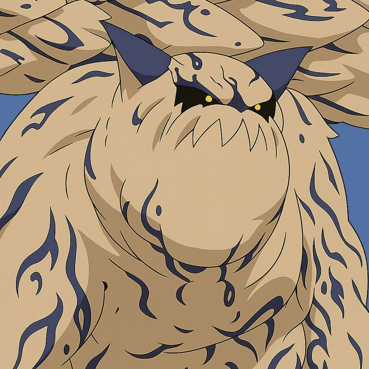
1 Cola - Shukaku
El tanuki de arenaForma: tanuki gigante de arena.
Jinchuriki famoso: Gaara.
Poderes: manipulacion de arena, sellos y tecnicas de viento.
Clave: tiene una personalidad muy burlona y una rivalidad casi constante con Kurama.
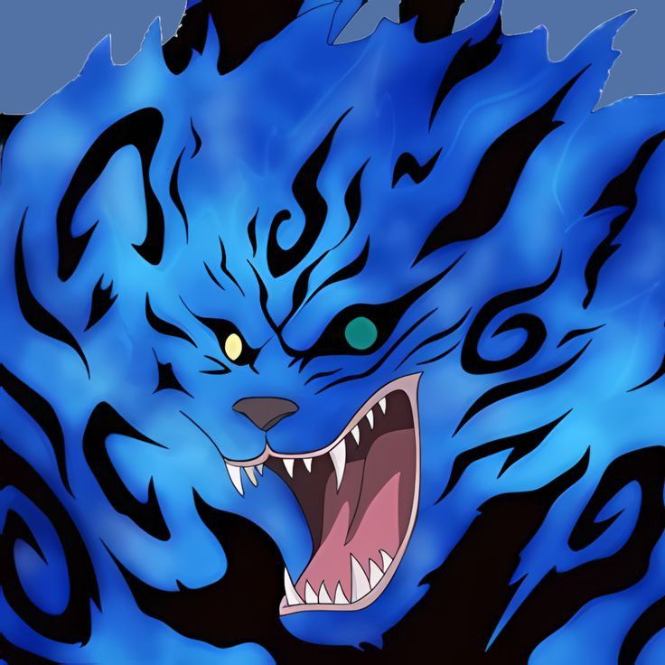
2 Colas - Matatabi
El gato azulForma: gato azul gigante cubierto por llamas.
Jinchuriki conocida: Yugito Nii.
Poderes: fuego azul, enorme velocidad y gran agilidad.
Clave: mezcla elegancia con violencia explosiva en combate.
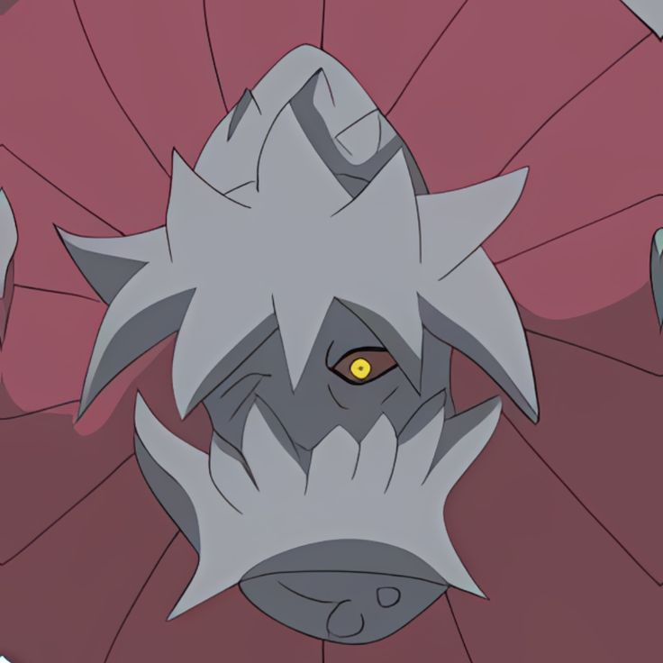
3 Colas - Isobu
La tortuga blindadaForma: tortuga gigante con gran caparazon.
Jinchuriki asociado: Yagura.
Poderes: tecnicas de agua y una defensa extrema.
Clave: es una de las bestias mas duras de derribar frontalmente.
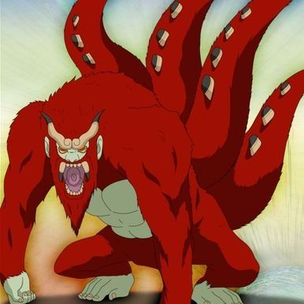
4 Colas - Son Goku
El gorila de lavaForma: gorila rojo gigantesco.
Jinchuriki conocido: Roshi.
Poderes: lava, fuerza fisica brutal y ataques de gran presion.
Clave: combina destruccion pura con una presencia casi legendaria.
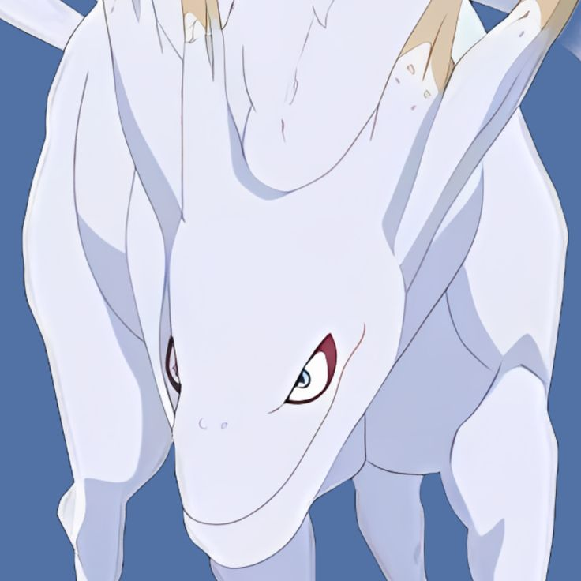
5 Colas - Kokuo
Caballo y delfinForma: mezcla entre caballo y delfin.
Jinchuriki conocido: Han.
Poderes: vapor, aceleracion y embestidas devastadoras.
Clave: sus cargas pueden ser demoledoras por fuerza y velocidad.
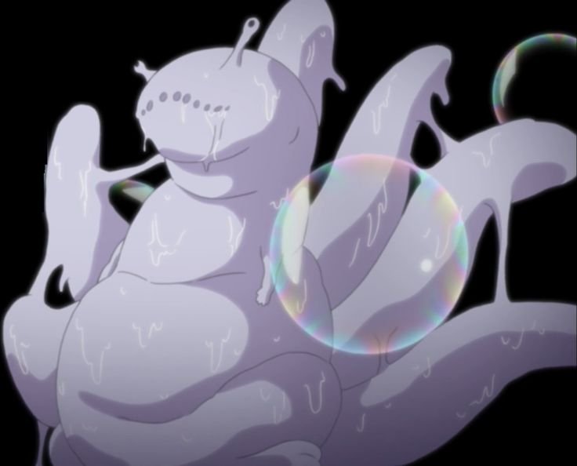
6 Colas - Saiken
La babosa acidaForma: babosa gigante.
Jinchuriki conocido: Utakata.
Poderes: burbujas corrosivas y sustancias acidas.
Clave: su estilo es raro, toxico y muy peligroso a media distancia.
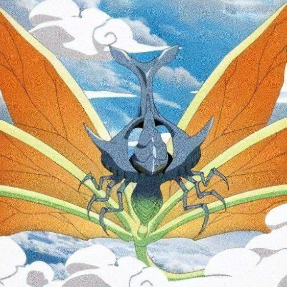
7 Colas - Chomei
El insecto giganteForma: escarabajo o insecto gigantesco.
Jinchuriki conocida: Fu.
Poderes: vuelo, polvo cegador y movilidad aerea.
Clave: es una de las bestias visualmente mas raras y menos humanas.
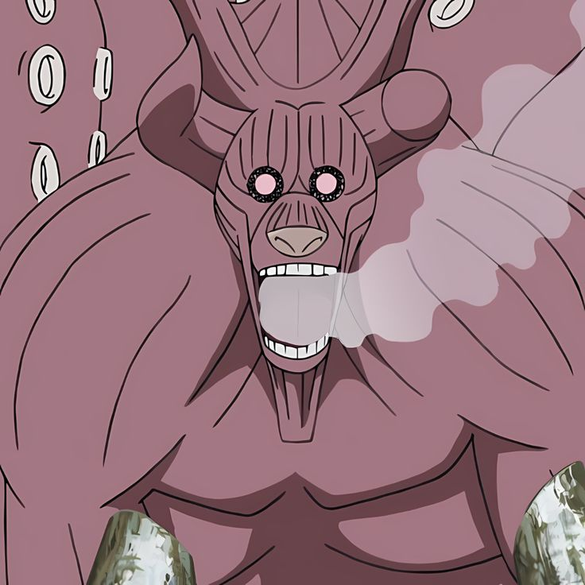
8 Colas - Gyuki
El toro pulpoForma: toro pulpo gigante.
Jinchuriki famoso: Killer B.
Poderes: tentaculos gigantes, enorme poder fisico y gran experiencia de combate.
Clave: junto a Kurama es de las bestias mas fuertes y mejor sincronizadas con su jinchuriki.
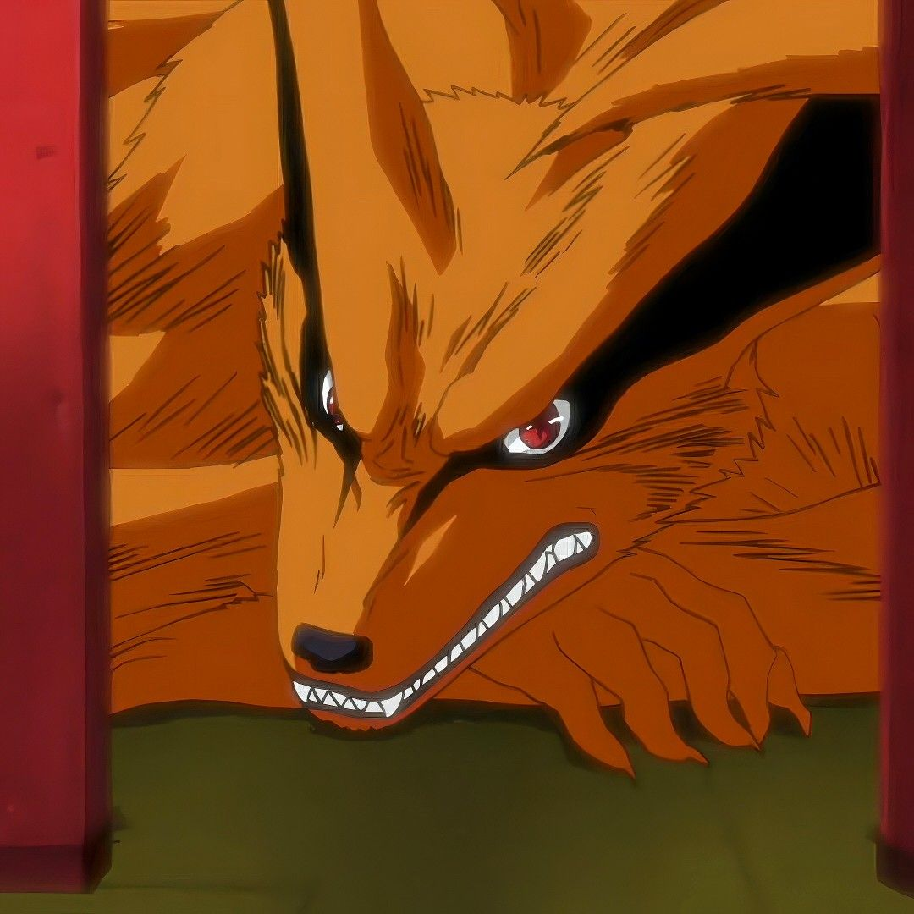
9 Colas - Kurama
El zorro de nueve colasForma: zorro gigante de nueve colas.
Jinchuriki famoso: Naruto Uzumaki.
Poderes: chakra absurdo, regeneracion y Bijudama extremadamente poderosa.
Caracteristica: suele verse como la bestia mas fuerte junto al Ocho Colas y es clave para el crecimiento de Naruto.
El Diez Colas
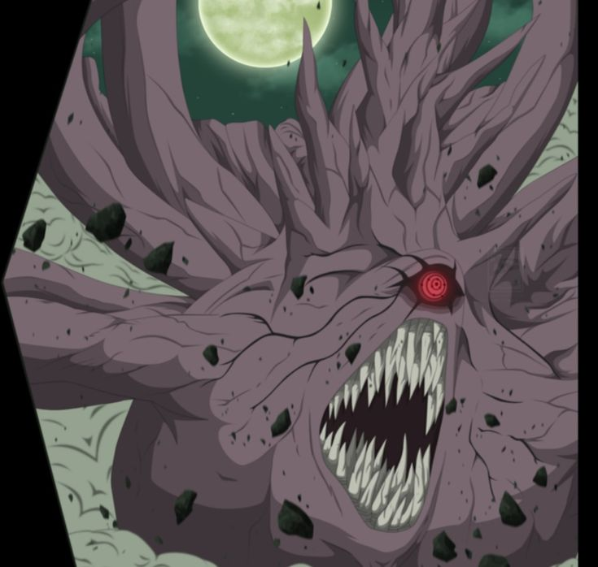
Ten-Tails
La bestia originalDe que va: es la bestia original de la que nacieron todos los bijus y la raiz de una amenaza de escala mundial.
Poder: chakra practicamente infinito y capacidad para destruir el mundo si queda sin control.
Usuarios: Obito Uchiha y Madara Uchiha llegaron a ser jinchuriki del Diez Colas.
Clave: su existencia conecta directamente a los bijus con Kaguya y el origen mas antiguo del conflicto shinobi.
Que es un jinchuriki
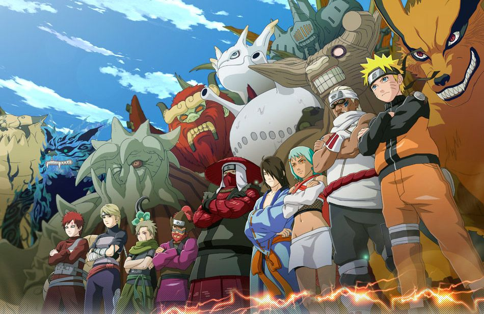
Jinchuriki
Portadores de bestiasDefinicion: una persona que tiene sellado un biju dentro de su cuerpo.
Ventajas: poder gigantesco, mucho chakra y transformaciones masivas.
Problemas: muchos fueron temidos, rechazados o tratados como armas por sus propias aldeas.
Clave: la historia de los jinchuriki resume uno de los temas mas duros de Naruto: cargar con un poder que los demas odian sin haberlo elegido.
Relaciones importantes entre biju y jinchuriki
Caso 1
Gaara y Shukaku
Gaara crece como un nino roto por el miedo del pueblo y por la violencia de Shukaku sellado en su interior. Su historia refleja el lado mas cruel de lo que significa ser jinchuriki en la infancia.
Caso 2
Killer B y Gyuki
Killer B fue uno de los pocos que logro convivir de verdad con su biju antes que Naruto. Su relacion con Gyuki es clave para entender que la alianza entre ambos era posible.
Caso 3
Naruto y Kurama
Es la evolucion mas importante de todas. Kurama odiaba a los humanos al principio, pero Naruto logra comprenderlo, respetarlo y convertir esa relacion en una amistad que redefine la guerra y el mensaje final de la serie.
Habilidades comunes de los bijus
- Bijudama. Bombas de chakra gigantes con un poder destructivo brutal.
- Regeneracion. Aguantan y se recuperan de danos que destruirian a casi cualquier ninja.
- Chakra inmenso. Su reserva supera por completo la escala humana normal.
- Transformaciones masivas. Los jinchuriki pueden llegar a manifestar capas o formas completas de la bestia.
- Voluntad propia. Cada uno tiene su manera de pensar, sentir y relacionarse con los demas.
Curiosidades y detalles extra
- Kurama odiaba a los humanos al principio, en gran parte por siglos de uso y manipulacion.
- Killer B fue uno de los pocos que domino totalmente a su biju, sirviendo de modelo antes de Naruto.
- Naruto logro hacerse amigo de todos los bijus, algo casi impensable para generaciones anteriores.
- El chakra de cada bestia tiene personalidad propia, y eso hace que no sean simples acumulaciones de poder.
- Shukaku y Kurama se pelean constantemente, y su dinamica tiene un punto muy caracteristico y burlon.
- Las bestias no son malvadas por naturaleza, pero fueron arrastradas a ciclos de guerra, sellado y explotacion.